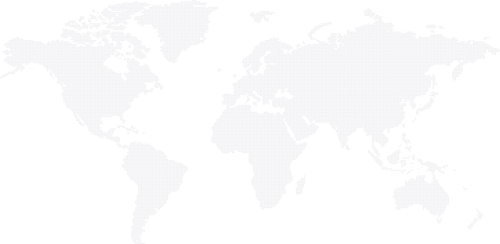

,

Kamaleon
Kamaleon is a frontend framework for improving UX and usability in every single aplication, due to its fuzzy logic internal system for making choices using location and weather.
Oh!, with a touch of material design (: